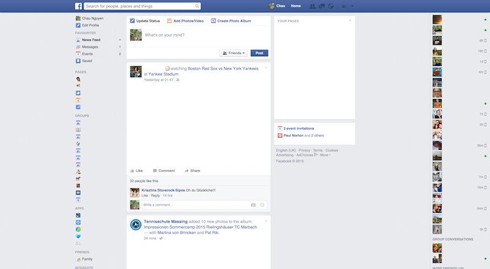
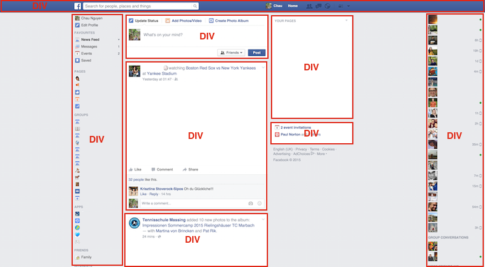
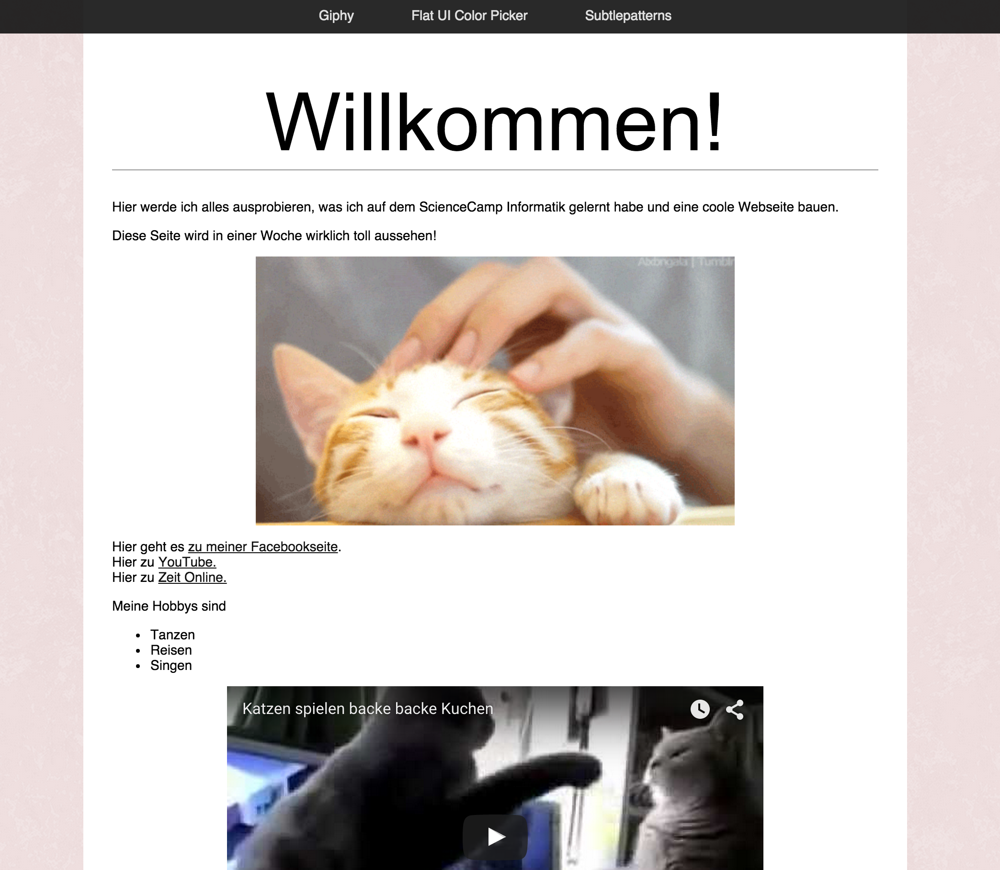
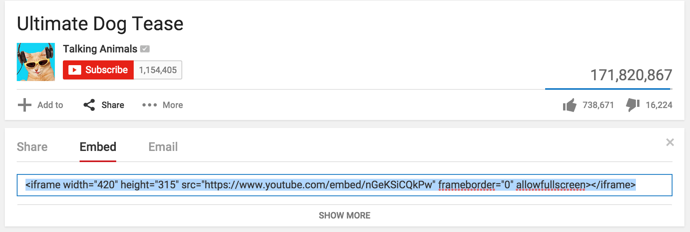

HTML
Was ist HTML?
HTML ist Sprache um Webseiten zu bauen. Mit HTML kann man beschreiben, wie eine Webseite aussehen soll. Im engeren Sinne ist es deswegen eigentlich keine Programmiersprache, sondern lediglich eine beschreibene Sprache.
HTML Dateien enden mit dem Dateiformat .html und können ganz einfach vom Browser geöffnet werden.
Erstelle eine leere Textdatei namens index.html und öffne sie im Browser.
Grundgerüst HTML
Das Grundgerüst von HTML sieht immer so aus:
<html>
<head>
</head>
<body>
</body>
</html>Die spitzen Klammern beschreiben immer einen Bereich. <html> beginnt einen html Bereich oder Abschnitt. </html> beendet ihn.
Die Einrückungen sind eigentlich unwichtig.
Diese Schreibweise ist genauso korrekt:
<html><head></head><body></body></html>Diese sagt auch das gleiche:
<html>
<head>
</head>
<body>
</body>
</html>Allerdings ist es ein guter Stil, den Code richtig einzurücken. Also gewöhnt es euch am besten sofort an :) Außerdem ist es besser lesbar.
Der Head-Bereich
Im Head - also dem Kopfteil - sind Informationen, die nicht auf der Webseite selbst dargestellt werden. Stattdessen sind hier andere Informationen drin, die nur indirekt mit der eigentlichen Webseite zu tun haben. Man nennt solche Informationen auch Meta-Informationen.
Ein Beispiel wäre zum Beispiel der Titel einer Webseite.
<html>
<head>
<title>Meine Webseite</title>
</head>
<body>
</body>
</html>Eine andere Information, die wir unserer Webseite noch mitgeben ist, dass wir Texte schreiben, in denen zum Beispiel Umlaute wie ü oder ß vorkommen. Diese Symbole sind im sogenannten UTF-8 enthalten.
Wir fügen also folgende Information in den Head Bereich ein, um Umlaute schreiben zu können:
<meta charset="utf-8">Probier es aus und finde raus, wo der Titel auftaucht.
Der Body-Bereich
Im Body ist der eigentliche Inhalt der Webseite. Wenn ich zum Beispiel einen Text auf meiner Webseite haben möchte, Schreibe ich ganz einfach den Text in den Body.
<html>
<head>
<title>Meine Webseite</title>
<meta charset="utf-8">
</head>
<body>
Willkommen auf meiner Webseite!
Hier werde ich alles ausprobieren,
was ich auf dem ScienceCamp Informatik
gelernt habe und eine coole Webseite bauen.
Diese Seite wird in einer Woche
wirklich toll aussehen!
</body>
</html>Schreibe deine erste HTML-Seite mit Inhalt.
Wie du siehst, ist die Formatierung des Textes auf der Webseite leider nicht so, wie wir es uns wünschen. Dafür müssen wir noch einige Textformatierungen lernen:
<br/>ist eine Abkürzung für break, also ein Zeilenumbruch<h1>Überschriften</h1>kann man mit h1-Tags schreiben.hist die Abkürzung für Headline, also einer Überschrift. statth1kann man auchh2oderh3usw. benutzen. Die Überschriften werden mit steigender Zahl kleiner.<p>Paragraphen</p>kann man mit p-Tags beschreiben. Die sind nicht unbedingt nötig, sind aber zu empfehlen.
Versuche nochmal deine erste Seite zu schreiben indem du die neu gelernten Tags anwendest.
<html>
<head>
<title>Meine Webseite</title>
<meta charset="utf-8">
</head>
<body>
<h1>
Willkommen auf meiner Webseite!
</h1>
<p>
Hier werde ich alles ausprobieren,
was ich auf dem ScienceCamp Informatik
gelernt habe und eine coole Webseite bauen.
</p>
<p>
Diese Seite wird in einer Woche
wirklich toll aussehen!
</p>
</body>
</html>Es gibt auch weitere Tags für Text wie zum Beispiel <strong> text </strong> oder <em> text </em>.
Probier strong und em aus.
Mehr als nur Text
Webseiten bestehen üblicherweise aus mehr als nur Text. Moderne Webseiten haben Bilder, Links oder Listen.
Bilder
Bilder kann man wie folgt einfügen:
<img src="PFAD_ZUM_BILD"/>Der Pfad zum Link ist eine Angabe, wo sich das Bild befindet.
Beispiel: Wenn diese HTML Datei und das Bild im gleichen Ordner sind, also so:
irgendein Ordner
├── index.html
└── bild.jpgdann wäre das Bild so aufzurufen: <img src="bild.jpg"/>
Wenn diese HTML Datei in einem Ordner ist, in dem sich ein weiterer Ordner bilder befindet, in dem bilder drin sind, also so:
irgendein Ordner
├── index.html
└── Ordner
└── bild.jpgdann wäre das Bild so aufzurufen: <img src="bilder/bild.jpg"/>
Du kannst alle möglichen Bildformate benutzen. Es funktioniert zum Beispiel auch mit .gif oder .png-Dateien.
Du kannst auch auf Bilder von anderen Webseiten zugreifen.
Auf http://i.giphy.com/achoDiZFxZvdm.gif ist zum Beispiel ein Bild. Um dieses anzuzeigen, kannst du den Link einfügen, also:
<img src="http://i.giphy.com/achoDiZFxZvdm.gif"/>

Falls du deine Webseite mal online stellst, solltest du das allesdings aus verschiedenen Gründen (z.B. Copyright) vermeiden. Für den kleinen persönlichen Gebrauch ist es aber erstmal ok.
Füge ein Foto von dir und Bilder in deine Webseite ein.
Links
Webseiten brauchen natürlich auch Links zu anderen Webseiten:
<a href="PFAD_ZUM_LINK"> Text </a>Auch hier gilt wie bei Bildern: Du kannst du externen Links verlinken oder auch eine eigene HTML-Seite mit dem Pfad angeben:
<a href="https://de.wikipedia.org/wiki/Hyperlink"> Wikieintrag zu Hyperlinks </a>
Der Inhalt innerhalb des a-Tags ist der Teil, der dann anklickbar ist und zum Link führt. Du kannst auch Bilder als Link benutzen:
<a href="https://de.wikipedia.org/wiki/Haushund">
<img src="bilder/link.gif"/>
</a>Wie du merkst, öffnet sich der Link direkt im aktuellen Tab oder Fenster. Manchmal (vor allem bei Links zu externen Seiten), möchte man den Link lieber in einem neuen Tag öffnen.
Setze dafür ein target, also ein Ziel:
<a href="https://de.wikipedia.org/wiki/Hyperlink" target="_blank">
Wikieintrag zu Hyperlinks
</a>Erstelle drei Links zu deinen Lieblingsseiten ein.
Listen
Listen macht man mit einem ul-Tag und jeder einzelne Bulletpoint wird mit einem li-Tag beschrieben. So sieht das dann aus:
Einkaufsliste
<ul>
<li> Eiscreme </li>
<li> Smoothie </li>
<li> Kekse </li>
</ul>Einkaufsliste
- Eiscreme
- Smoothie
- Kekse
Erstelle eine Liste mit deinen Hobbys
DIVs
Kommen wir nun zum wichtigsten Konstrukt von Webseiten: Divs. Ein Div-Tag ist schwer zu erklären. Man kann mit einem Div, gewisse Inhalte gruppieren und strukturieren. Nehmen wir als Beispiel Facebook.

Die Seite hat verschiedene Inhalte. Um dies zu strukturieren, werden verschiedene Divs benutzt. Facebook könnte zum Beispiel so aussehen:

Warum genau DIVs nützlich sind und gebraucht werden, wird später nochmal klarer. Inhalte in DIVs zu unterteilen ist recht einfach:
<div>
<!-- Inhalte vom Div -->
</div>Schreibe deinen aktuellen Webseiten Inhalt in ein DIV.
Glückwunsch!
Du kannst nun alle Basics für HTML <3
Aber ehrlich gesagt sieht unsere Webseite noch nicht wirklich schön aus. Wir könnten zwar auch mit HTML unser Design machen, aber es gibt ein viel besseres Tool, um das zu bewerkstelligen. Es nennt sich CSS.
CSS
Wir haben ein Webseite und sie sieht schonmal recht gut aus! Das Design lässt allerdings noch ein bisschen zu wünschen übrig. Um Webseiten zu designen kann man CSS benutzen. Eine CSS-Datei ist eine Datei, in der man Anweisen zum Design geben kann. Zum Beispiel kannst du dort angeben, welche Hintergrundfarbe oder Textfarbe die Webseite haben soll.
Einfügen der CSS Datei
Erstelle zuerste einen neuen Ordner namens style. In diesem Ordner erstellst du eine leere Datei mit dem Namen style.css.
Dann fügst du im head-Bereich deiner Webseite die Information ein, dass wir in style.css den Style der Webseite festlegen werden:
<link rel="stylesheet" type="text/css" href="style_template.css"/>Aufbau von CSS
Der Aufbau eines CSS sieht so aus:
Element_das_ein_Styling_kriegt {
Attribut_1: Wert_für_Attribut_1;
Attribut_2: Wert_für_Attribut_2;
}Eine Übersicht über alle möglichen Attribute gibt es hier.
Hintergrund
Wenn wir also zum Beispiel die Hintergrundfarbe der gesamten Webseite ändern wollen, schreiben wir folgendes in die CSS Datei:
body {
background: red;
}Wenn du die Farbe genauer spezifizieren möchtest, brauchst du einen bestimmten Code für die Farben. Auf http://www.flatuicolorpicker.com/ findest du eine Menge Farben und deren Codes. Die Codes bestehen immer aus sechs Zeichen und müssen mit einem # anfangen. Zum Beispiel:
body {
background: #FDE3A7;
}Statt einer Farbe kannst du auch Bilder benutzen:
body {
background-image: url(../bilder/subtlepatterns/pink_rice.png);
}.. heißt übrigens, dass man in der Ordnerstruktur einen Ordner hoch gehen muss und dann in den Ordner bilder etc.
Eine tolle Seite zum Suchen nach Hintergrundbildern ist http://subtlepatterns.com/.
Such dir einen Hintergrund für deine Webseite aus.
Schrift
Schriftart, -farbe, -größe und -ausrichtung bestimmt man mit
color: #111111;
font-family: Helvetica;
font-size: 14px;
text-align: left;Die Schriftgröße kannst du mit einer festen Anzahl an pixeln setzen. Du kannst sie aber auch relativ zu der Standardgröße (die Größe, die im Body genutzt wird) setzen. Wenn du zum Beispiel die Größe im body auf 14px setzt und in der Überschrift eine Schrift haben willst, die vier mal so groß ist, schreib:
font-size: 4em;Style die Schrift im Body und für die h1 Überschrift
Design des Inhalts
Vergleicht man unsere aktuelle Webseite mit unserem Ziel, dann wollen wir den Inhalt unserer Webseite zentrieren und einen anderen Hintergrund haben. Jetzt kommt unser DIV ins Spiel!
Wir wollen nämlich allem, was im Div ist
- einen anderen Hintergrund geben
- die Breite ein wenig kleiner machen
- zentrieren
Dazu geben wir dem Div erstmal einen Namen. Dafür gehen wir zurück in die HTML-Datei und ändern
<div>
...
</div>um in
<div class="inhalt">
...
</div>Jetzt ist unser DIV ein DIV der Klasse “inhalt” und wir können die Breite und den Hintergrund wie folgt festlegen:
.inhalt {
background: white;
width: 800px;
}Zentrieren geht mit
margin: 0 auto;Leider ist es etwas unschön, dass es keinen Rand zwischen dem DIV und dem Text gibt. Das kann man mit einem sogenannten padding ändern. Ein Padding wird mit 4 Werten angegeben: Der Abstand nach oben, nach rechts, nach unten und nach links (also im Uhrzeigersinn).
Dein Padding kann z.B. so aussehen:
padding: 40px 30px 60px 30px;Style deinen Inhalt, sodass er dir gefällt.
Menüleiste
Was jetzt noch fehlt, ist eine schöne Menüleiste, wie in unserer Demo:

Die Menüleiste sieht sehr verdächtig nach einem neuen DIV aus!
Füge ein neues DIV mit einer Liste vor dem restlichen Inhalt in die HTML-Seite ein. Gib dem DIV die Klasse menu und setze ein padding.
Jetzt wollen wir das DIV stylen.
Gib dem Menu eine dunkle Hintergrundfarbe und setze die Schrift auf eine helle Farbe.
Nun wollen wir die Listenpunkte verschwinden lassen. Außerdem möchten wir den Text nicht untereinander, sondern nebeneinander. Dafür kannst du folgende Attribute setzen:
.menu ul {
display: inline-block;
list-style: none;
}und
.menu ul li {
float: left;
}Jetzt ist der Text zwar nebeneinander, aber es ist viel zu nah und klebt sofort am vorherigen Text. Dafür benutzen wie wieder ein padding!
.menu ul li {
padding: 8px 25px;
}Abschluss
Glückwunsch! Du hast alle Grundlagen für HTML und CSS gelernt. Das war jetzt evt. sehr, sehr viel für einen Tag. Und du hast sicher auch gemerkt, dass unsere Webseite immer noch nicht aussieht, wie die Demo.
Auf keinen Fall verzweifeln! Webdesign ist extrem schwierig und erfordert vorallem viel Erfahrung! Um weiter zu üben und mehr zu lernen ist es immer sehr hilfreich, bei anderen Webseiten abzuschauen und von ihnen zu lernen.
Wir lernen jetzt noch einige nützliche Tools, um das Webdesign nach und nach anzupassen.
Sonstiges
Embeddings
Viele Seiten bieten dir oftmals sogenannte Embed-Möglichkeiten an um gewissen Sachen auf deiner eigenen Webseite anzuzeigen. Auf YouTube kann man zum Beispiel jedes Video einfügen:

Füge dein Lieblings-YouTube Video ein.
<!DOCTYPE html>
HTML ist eine Markup Language. Neben HTML gibt es weitere, andere Markup Languages. Du erkennst diese, dass sie immer Bereiche mit Tags und spitzen Klammern verwenden. Eigentlich muss man daher immer am Anfang der Datei sagen, um was für eine Markup Language es sich handelt. Richtig wäre daher:
<!DOCTYPE html>
<html>
<head>
</head>
<body>
</body>
</html>Wie du aber bereits gesehen hast, funktioniert es auch ohne. Aber für einen sauberen Programmierstil, willst du es vielleicht drin haben.
Füge die DOCTYPE Anweisung in deine Webseite ein.
Browser Inspection
(Fast) alle Webbrowser bieten dir Möglichkeiten an, den HTML-Code von Webseiten zu sehen. Dies ist zum Beispiel praktisch, wenn du etwas von anderen Webseiten toll findest und es nachbauen möchtest. Es hilft aber auch, um an der eigenen Webseite zu basteln und schneller Änderungen zu sehen.
Twitter hat zum Beispiel abgerundete Ecken um Textboxen. Finde heraus wie man das mit CSS umsetzt.
Kommentare
Manchmal möchte man im Code gewisse Dinge erklären, oder den Code strukturieren, damit man in besser versteht. Allerdings kann man nicht einfach Text reinschreiben, weil dieser dann auf der Webseite zu sehen wäre.
Dafür gibt es Kommentare. Du kannst überall in deinem Code Kommentare schreiben und diese werden nicht im Browser angezeit! Kommentare schreibst du so:
<!-- Dies ist ein Kommentar -->Kommentiere deinen Code.